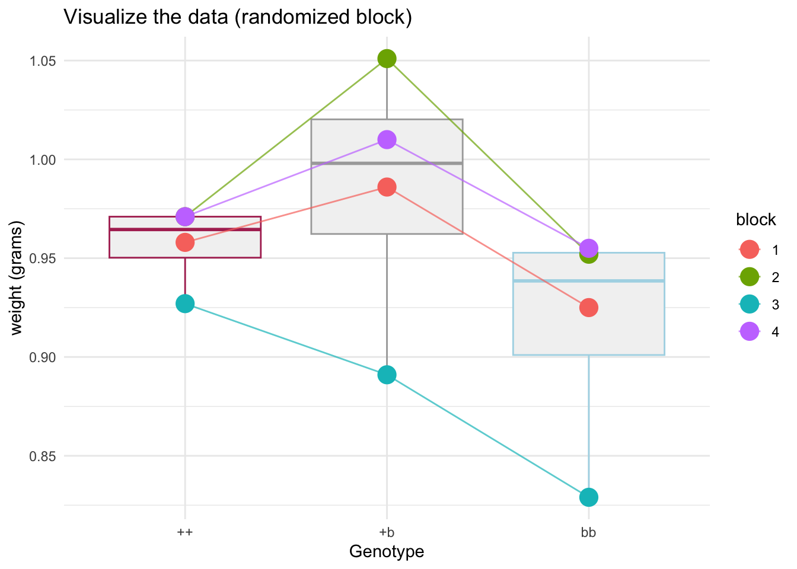

26 Mon Nov 09 - Randomized blocks and nested effects
Today we consider some more examples of fixed and random effects for two categorical explanatory variables.
We will also discuss calculating adjusted sum of squares to determine whether individual terms in models are significant. See here.
26.1 Randomized blocks
The flour beetle Tribolium casteneum was a model lab organism for establishing the basic facts and principles of quantitative genetics, including inbreeding and response to selection. Once the whole genome was sequenced, Tribolium was used in immunohistochemistry, in situ hybridization, gene sequencing for characterization of microRNAs, and gene editing.
Tribolium is a major pest of stored grain. Economic losses consist of reduced weight and product quality, difficulties in baking, reduced marketability of infested products, and an accompanying unpleasant smell. Pest numbers are reduced by sieving or by adding inert dusts that cause death by dessication.
This study illustrates a randomized block design, which has a fixed and a random factor. The randomized block is an example of statistical control, in which the effects of one variable (the random factor) are removed in order to arrive at a better analysis of the fixed factor. This analysis is a more sensitive test because it removes some of the noise in the data before testing. The paired t-test is a special case of the randomized block, in which the fixed factor has just two categories.
Verbal model Does weight of flour beetle Tribolium vary among genotype, after controlling for differences among experiments ? Genotype bb is a mutant strain, for which the expected weights are least for the homozygote bb and greatest for the heterozygote +b. The analysis removes the effects of blocks. This results in a more sensitive test of whether weight varies among genotypes.
26.2 Load the data and assess assumptions
beetle.data = read.csv("https://raw.githubusercontent.com/ahurford/biol-4605-data/refs/heads/main/data/tribolium.csv")
beetle.data## block Gtype Wt
## 1 1 1 0.958
## 2 2 1 0.971
## 3 3 1 0.927
## 4 4 1 0.971
## 5 1 2 0.986
## 6 2 2 1.051
## 7 3 2 0.891
## 8 4 2 1.010
## 9 1 3 0.925
## 10 2 3 0.952
## 11 3 3 0.829
## 12 4 3 0.955These data are a bit ambiguous so I will do some renaming to avoid errors:
require(dplyr)
beetle.data = beetle.data%>%mutate(genotype = case_when(Gtype == 1 ~ "++",
Gtype == 2 ~ "+b",
Gtype == 3 ~ "bb"))%>%rename(weight=Wt)
beetle.data$block=as.factor(beetle.data$block)
beetle.data## block Gtype weight genotype
## 1 1 1 0.958 ++
## 2 2 1 0.971 ++
## 3 3 1 0.927 ++
## 4 4 1 0.971 ++
## 5 1 2 0.986 +b
## 6 2 2 1.051 +b
## 7 3 2 0.891 +b
## 8 4 2 1.010 +b
## 9 1 3 0.925 bb
## 10 2 3 0.952 bb
## 11 3 3 0.829 bb
## 12 4 3 0.955 bblibrary(ggplot2)
ggplot(beetle.data, aes(x = factor(genotype), y = weight)) +
# 1. Add the box plot layer
geom_boxplot(
outlier.shape = NA, # CRITICAL: Prevents duplicate plotting of outliers
fill = "grey95", # Light fill to keep it as a background summary
color = c("maroon","darkgray","lightblue") # Muted border color
) +
geom_line(aes(group = block, color = block), alpha = 0.7)+
# 2. Add the strip plot (jittered points) layer
geom_jitter(aes(color=block),
position = position_jitter(width = 0, height = 0), # Controls data spreading - we need not spreading for this paired plot to work.
size = 5, # Modify point size
) +
labs(
x = "Genotype",
y = "weight (grams)",
title = "Visualize the data (randomized block)"
)+theme_minimal()
26.3 Write the model and execute the analysis
\[ M = \beta_0 + \beta_B B + \beta_G G + \epsilon \] or \[ Y_{ijk} = \mu + B_j + \alpha_i + \epsilon_{ij} \]
require(lme4)
require(lmerTest)
beetle.model = lmer(weight~(1|block)+genotype, data=beetle.data)
summary(beetle.model)## Linear mixed model fit by REML. t-tests use Satterthwaite's method [
## lmerModLmerTest]
## Formula: weight ~ (1 | block) + genotype
## Data: beetle.data
##
## REML criterion at convergence: -28.7
##
## Scaled residuals:
## Min 1Q Median 3Q Max
## -1.15489 -0.47398 -0.01602 0.32014 1.25938
##
## Random effects:
## Groups Name Variance Std.Dev.
## block (Intercept) 0.0021444 0.04631
## Residual 0.0006972 0.02641
## Number of obs: 12, groups: block, 4
##
## Fixed effects:
## Estimate Std. Error df t value Pr(>|t|)
## (Intercept) 0.95675 0.02665 4.20769 35.896 2.15e-06 ***
## genotype+b 0.02775 0.01867 6.00001 1.486 0.188
## genotypebb -0.04150 0.01867 6.00001 -2.223 0.068 .
## ---
## Signif. codes: 0 '***' 0.001 '**' 0.01 '*' 0.05 '.' 0.1 ' ' 1
##
## Correlation of Fixed Effects:
## (Intr) gntyp+
## genotype+b -0.350
## genotypebb -0.350 0.500## Type III Analysis of Variance Table with Satterthwaite's method
## Sum Sq Mean Sq NumDF DenDF F value Pr(>F)
## genotype 0.0097172 0.0048586 2 6 6.9682 0.02726 *
## ---
## Signif. codes: 0 '***' 0.001 '**' 0.01 '*' 0.05 '.' 0.1 ' ' 1##
## Error: block
## Df Sum Sq Mean Sq F value Pr(>F)
## Residuals 3 0.02139 0.00713
##
## Error: Within
## Df Sum Sq Mean Sq F value Pr(>F)
## genotype 2 0.009717 0.004859 6.968 0.0273 *
## Residuals 6 0.004184 0.000697
## ---
## Signif. codes: 0 '***' 0.001 '**' 0.01 '*' 0.05 '.' 0.1 ' ' 126.4 Hierachical ANOVA (nested effects)
26.4.1 Data
Two measurements made on the left wings of 4 mosquitos in each of 3 cages. This is a nested design. We cannot match flies across cages. At a lower level, we cannot match wing measurements across flies.
26.4.2 Nested models
Two-way ANOVA has an interaction term. Testing starts with this term.
In randomized blocks, the interaction term is present logically, but assumed to be zero if blocks are homogeneous.
Hierarchical ANOVA differs from crossed designs. The interaction term \(\mbox{Fly} \times \mbox{Cage}\) cannot be estimated. It is folded into a new term: \(\mbox{Fly(Cage)} = \mbox{Cage} + \mbox{Fly} \times \mbox{Cage}\).
In this example, we have no information to match a fly in Cage I (Fly A, B, C, D) to a fly in Cage II (Fly E, F, G, H). Fly is nested within cage. Consider this diagrammatically (i.e. Figures 6.7 p95 and 7.4 p120 of Quinn and Keough and also the ‘mobile’ diagram in Dr. Schneider’s notes for Ch 13.6).
wing.data = read.csv("https://raw.githubusercontent.com/ahurford/biol-4605-data/refs/heads/main/data/fly-cage.csv")
wing.data## cage fly length
## 1 I A 58.5
## 2 I A 59.5
## 3 I B 77.8
## 4 I B 80.9
## 5 I C 84.0
## 6 I C 83.6
## 7 I D 70.1
## 8 I D 68.3
## 9 II E 69.8
## 10 II E 69.8
## 11 II F 56.0
## 12 II F 54.5
## 13 II G 50.7
## 14 II G 49.3
## 15 II H 63.8
## 16 II H 65.8
## 17 III I 56.6
## 18 III I 57.5
## 19 III J 77.8
## 20 III J 79.2
## 21 III K 69.9
## 22 III K 69.2
## 23 III L 62.1
## 24 III L 64.526.5 Execute the analysis
## Warning in aov(length ~ cage + Error(cage/fly), wing.data): Error() model is
## singular##
## Error: cage
## Df Sum Sq Mean Sq
## cage 2 665.7 332.8
##
## Error: cage:fly
## Df Sum Sq Mean Sq F value Pr(>F)
## Residuals 9 1721 191.2
##
## Error: Within
## Df Sum Sq Mean Sq F value Pr(>F)
## Residuals 12 15.62 1.302